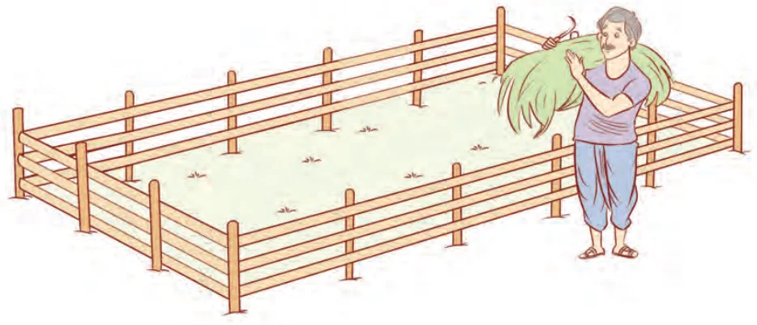
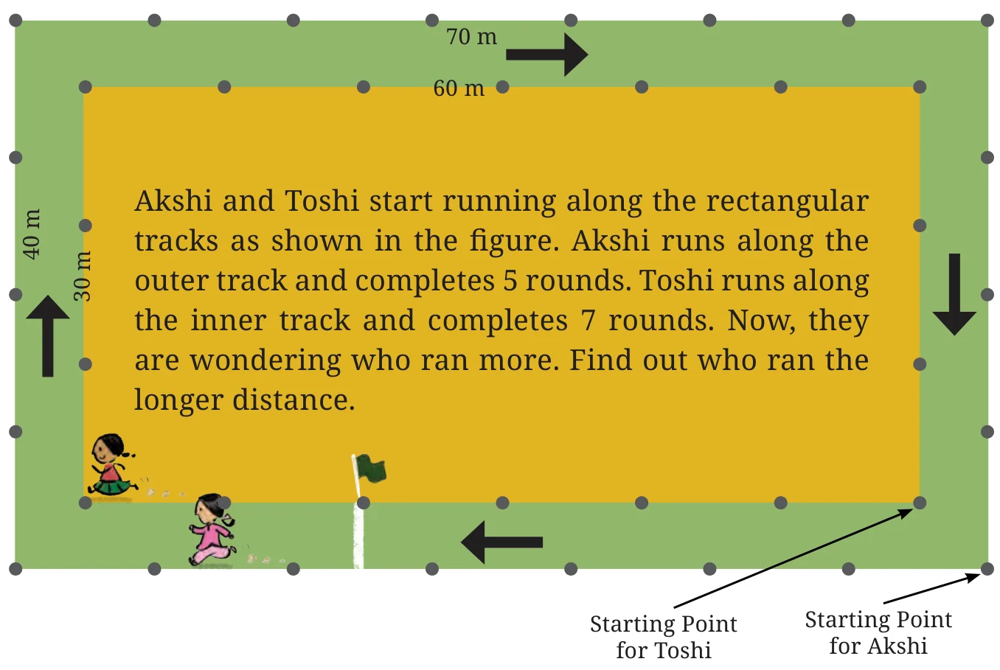

- Find the missing terms:
- Perimeter of a rectangle = 14 cm; breadth = 2 cm; length = ?.
- Perimeter of a square = 20 cm; side of a length = ?.
- Perimeter of a rectangle = 12 m; length = 3 m; breadth = ?.
- A rectangle having sidelengths 5 cm and 3 cm is made using a piece of wire. If the wire is straightened and then bent to form a square, what will be the length of a side of the square?
- Find the length of the third side of a triangle having a perimeter of 55 cm and having two sides of length 20 cm and 14 cm, respectively.
- What would be the cost of fencing a rectangular park whose length is 150 m and breadth is 120 m, if the fence costs ₹40 per metre?
- A piece of string is 36 cm long. What will be the length of each side, if it is used to form:
- A square,
- A triangle with all sides of equal length, and
- A hexagon (a six sided closed figure) with sides of equal length?
- A farmer has a rectangular field having length 230 m and breadth 160 m. He wants to fence it with 3 rounds of rope as shown. What is the total length of rope needed?

Matha Pachchi!

Akshi and Toshi start running along the rectangular tracks as shown in the figure. Akshi runs along the outer track and completes 5 rounds. Toshi runs along the inner track and completes 7 rounds. Now, they are wondering who ran more. Find out who ran the longer distance.
Each track is a rectangle. Akshi's track has length 70 m and breadth 40 m. Running one complete round on this track would cover 220 m, i.e., \(2 \times (70 + 40) \text{ m} = 220 \text{ m}\). This is the distance covered by Akshi in one round.